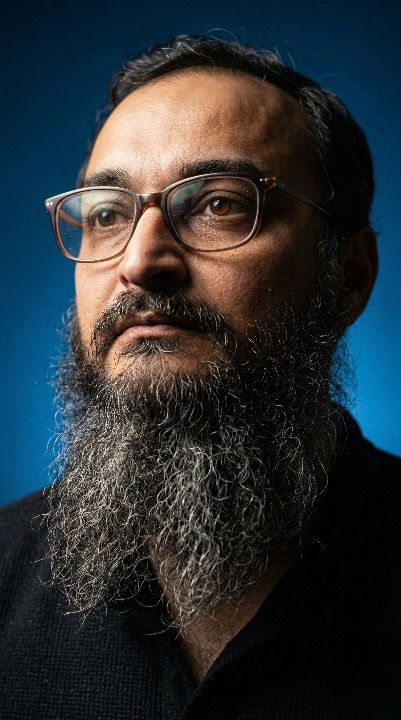
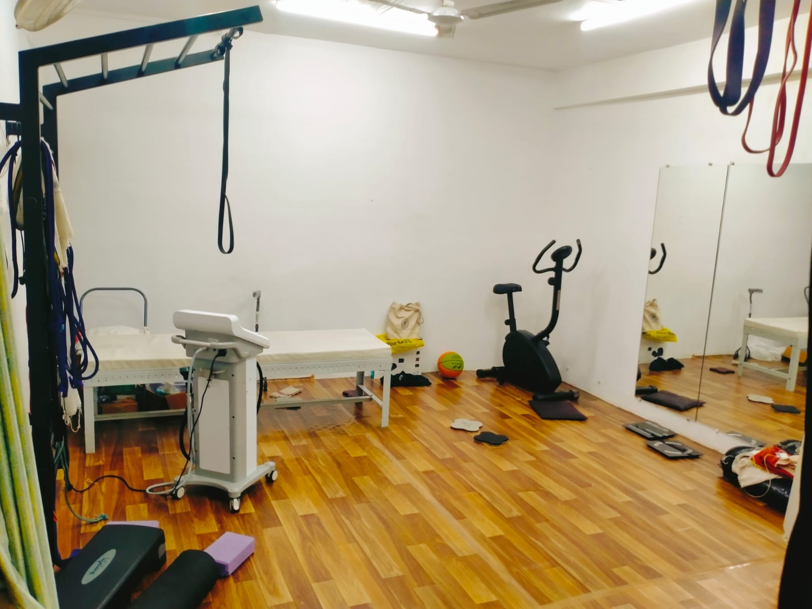
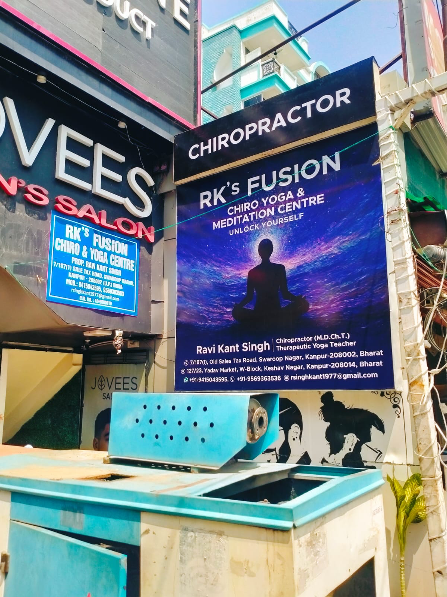
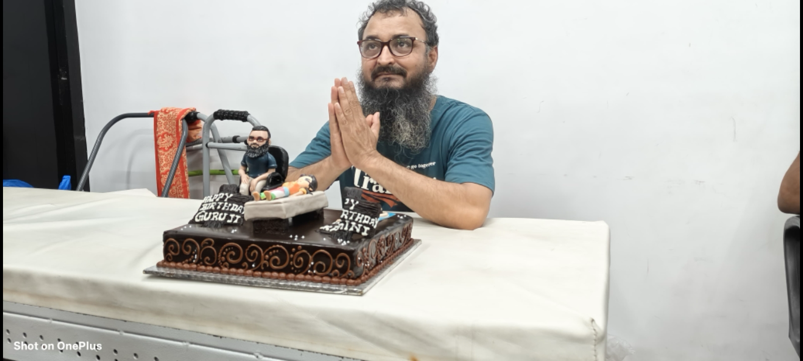
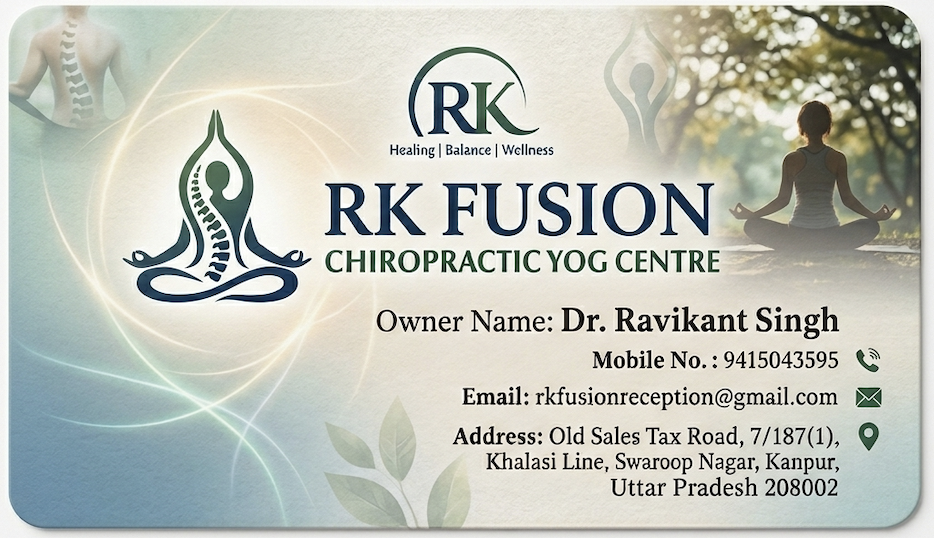

Chiropractic Adjustment
Precise joint work to relieve restrictions, reduce pain, and improve nervous system flow.
Swaroop Nagar · Kanpur
RK Fusion Chiropractic Yog Centre blends precise chiropractic-inspired care with the depth of yogic practice to restore balance in your spine, nervous system, and mind.
At RK Fusion Chiropractic Yog Centre, every session is crafted to gently guide your spine back towards its natural curves while integrating breath, mindful movement, and deep relaxation.
Located in the heart of Swaroop Nagar, Kanpur, we offer a calm, studio-like environment where you can pause, breathe, and reset.
Targeted techniques that respect the natural curves of your spine and nervous system.
Gentle asanas, breathwork, and relaxation practices tailored to your body’s current needs.
We look beyond symptoms to understand your posture, lifestyle, and stress patterns.
Short and long-term care plans for pain relief, posture, and performance.

Every session at RK Fusion Chiropractic Yog Centre is guided personally by a dedicated practitioner who lives and breathes holistic health – from spinal alignment to yogic breath and meditation.
With years of hands-on experience in chiropractic-inspired care and yoga therapy, the focus is simple: help you stand taller, move more freely, and feel at home in your body again.
A curated blend of chiropractic-inspired techniques and yogic practices to support your healing journey.
Precise joint work to relieve restrictions, reduce pain, and improve nervous system flow.
One-on-one yoga therapy integrating breath, movement, and mindful relaxation.
Corrective routines for tech neck, rounded shoulders, and lower back fatigue.
Structured plans combining adjustments, stretches, and strengthening for long-term spinal health.
Support for chronic back, neck, and joint pain with safe, progressive care.
Nervous system calming practices to release stored tension and improve sleep.
A calm, intimate space in Swaroop Nagar designed for alignment, breath, and deep rest.




“My chronic neck pain has reduced dramatically and I finally feel aligned and grounded.”
“The blend of spinal work and yoga is unlike anything I’ve tried before. I walk out lighter every time.”
“I came for back pain, stayed for the clarity and calm it brings to my week.”
Book an appointment or send a message. We’ll help you choose the right starting point based on your body and routine.